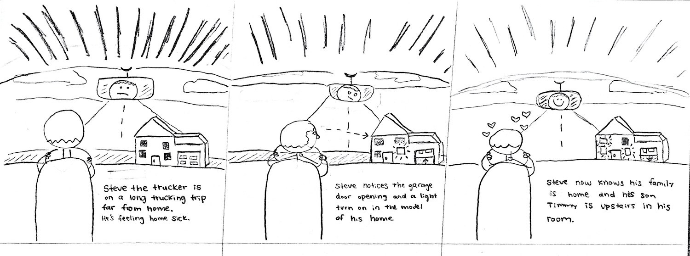
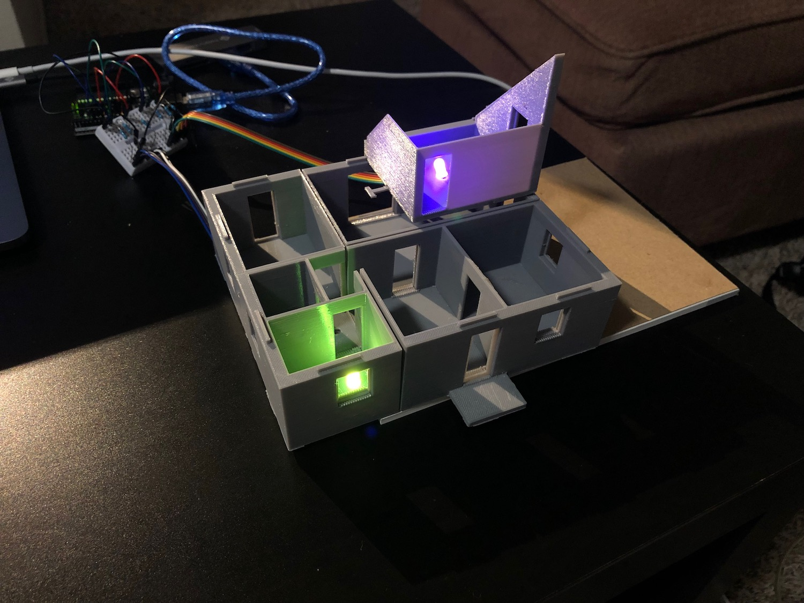

Cabin is a communication tool that helps connect truck drivers (and other abroad workers) to their long-distance families. Cabin is a scaled down, replica model dashboard ornament of a user's own home, that reacts to its actual changes – which rooms' lights are on, when the garage opens, or when the backdoor is open to let the dog out.
I worked with three other students throughout this 10-week project. As the only designer on this team, I created prototypes through each stage of the design process.
For this purpose of this class and constraints of this project, we used interviews and directed storytelling. We found this method the most meaningful and feasible to execute due to its accessibility to willing participants, and acquire substantial research findings. We interviewed three truck drivers, who we found through Reddit AMA threads:
After conducting interviews and directed storytelling sessions with our participants, we created personas that encapsulated the archetypes for our trucker user group.
I identified requirements that should be addressed:
Given our design requirements, my team and I brainstormed potential user scenarios to guide our ideation process. Then translated them to higher fidelity picture storyboards.

Given our design requirements derived from our personas and user research, and the nature of truck driving, we determined that we could solve their pain points best with a familiar device, a dashboard ornament. Truckers already decorate their dashes with toys and trinkets that remind them of home, so we are providing them with a replica model of their home that was reactive to the actual state of their home.
Luckily, we found one local truck driver with a schedule free enough to donate 45 minutes of their time to help us test a prototype, which we created with paper cut outs and battery-powered LED candles.
After several rounds of critique in our design studios, I started modeling what a potential house model could look like, using Rhino.
The house is bit modular for convenient transport, as truckers switch their semi-trucks quite often.
For the final dashboard ornament design, and all measurements fully dialed in, the model was ready to accept the reactive LEDs. For proof of concept, I have demo'd how the LEDs may switch colors using an Arduino board. The switching colors represent a certain family member's availability.

Cabin was the first project I designed for without using any screens or mobile app. Constraining my design thinking to not include an app was definitely a challenge, as I'm forced to work within the confines of essentially a toy house. In the context of bridging long-distance families together though, I now feel like the absence of screen technology is more meaningful than what can be created throurgh an app, or even a video call.
I experienced how frustrating finding representative from such a niche user group was in this project, as none of the people in our extended networks could reach more than one actual truck driver, which made usability testing our prototypes for sizing and features astronomically more difficult.
We also wanted to explore a model truck for the family's end. If the trucker receives a model house that's reactive to his/her home, the family should receive a reactive model of their truck driver's truck. We were actually halfway through design and prototyping of this concept, but were too time-constrained to sufficiently test and develop it further.